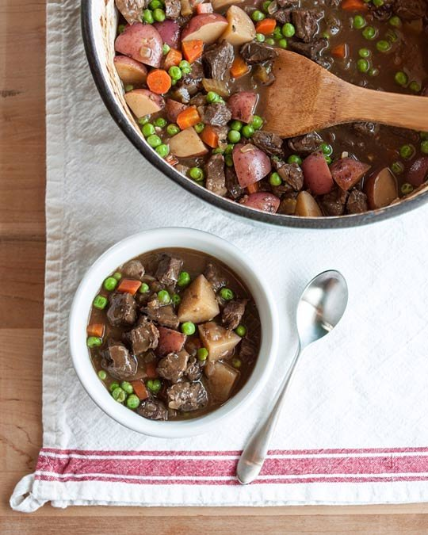
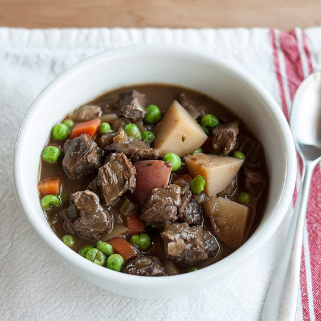

How To Make the Best Beef Stew from Scratch
Homemade beef stew is a dish that will serve you well through long winters and family visits and other small moments of need.
Like a good chili or chicken noodle soup, homemade beef stew is one of those dishes that is just good to have in your back pocket. It's a dish that will serve you well through long winters and family visits and other small moments of need. Making one isn't hard and will surely nourish you through several meals. Here's my tried-and-true method for making a very good beef stew.
There are a few non-negotiable steps to making a beef stew. First, you must sear the meat. Truly sear. Getting the sides brown isn't the same. You need to lay the cubes in a hot pan and let them sizzle for a good five minutes before nudging them. When the bottoms have a dark crust and come away easily from the pan, then you can move on with the other sides.
A "fond," a.k.a. sticky dark glaze, will start to form on the bottom of the pan as you continue searing your meat in batches. This fond is the source of the stew's great magic. It's full of caramelly, roasty, and nutty flavors that will make you swoon when you taste the final dish.
The second non-negotiable is time. Chuck meat is a hard working muscle and it takes a good long stretch of cooking for it to become tender. Rush things too quickly and your beef will be tough and chewy. Cook it low and slow for at least two hours, and fork-tender meat will be your reward.
There are also a few aspects to my version of beef stew that you might find controversial. I use chicken stock instead of beef stock, and have done so ever since an article of Cook's Illustrated gave me permission years ago. I always found that beef stock gave soups and stews an oddly tinny flavor, and the good folks at Cook's Illustrated agreed with me. Unless you actually make your own beef stock (a whole different beast from the canned variety), I recommend using chicken stock. Try it; I bet you'll like it.
I also wait to add my potatoes and carrots until halfway through cooking. There is nothing I hate more than mushy carrots, so I try to time their perfect moment of doneness with the stew meat.
For seasonings, I like Worcestershire sauce, thyme, and a good red wine. I've also used a dark beer in place of the wine and been very happy with the results. You can certainly play with your own favorite seasonings, but I would recommend keeping them fairly simple. If you've seared your meat well and cooked it long enough, the stew can really stand on its own without much else.
I know this is one version of beef stew, though I'll confess that I think it's a particularly good one. How do you like to make your stew? What do you do differently?
How to Make a Very Good Beef Stew
Serves 6-8
What You Need
Ingredients
- 3-4 pounds beef chuck roast
- 1-3 tablespoons vegetable oil, divided
- 2 medium onions, diced
- 3 celery stalks, diced
- 2 cloves garlic, minced
- 2 tablespoons tomato paste
- 2 tablespoons Worcestershire, divided
- 1 teaspoon salt
- 3 tablespoons all-purpose flour
- 1 cup red wine or amber beer, plus extra to finish
- 3 sprigs fresh thyme or 2 teaspoons dried
- 1 bay leaf
- 4 cups chicken stock
- 3 carrots, diced
- 1 ½ pounds red bliss potatoes, cubed
- 1 cup frozen peas
- Salt and pepper

Equipment
A large Dutch oven or soup potSturdy wooden spoon
Instructions
- Cube the beef. Trim off any large pieces of fat from the outside of the roast, then cut it into small bite-sized cubes. This is most easily done if you cut the roast into slices, each slice into strips, and then the strips into cubes. Use a sharp knife and don't forget to keep your fingers out of the way and your thumb tucked in as you're slicing through the meat.
- Warm the pot and begin searing the meat. Set a large Dutch oven or soup pot over medium-high heat and film the bottom with oil. When hot enough that a drop of water sizzles off the surface, work in batches to sear the beef. Add a single layer of beef cubes to the pan, being careful not to crowd the cubes too closely, and sprinkle them generously with salt and pepper.
- Continue searing all the meat. Let the cubes of beef cook undisturbed for 4-5 minutes, until the undersides develop a dark brown crust and come away easily from the pan. Toss and continue searing on all sides, another 4-5 minutes. Transfer the seared meat to a clean bowl and continue searing the remaining meat in batches. Add another teaspoon or two of oil between batches if the pan looks dry.
- Watch for the "fond," a.k.a. sticky dark glaze, to form: A sticky dark glaze will start to form on the bottom of the pan. This is technically called "the fond," and it is a major source of deep, caramelized flavor in your stew. We'll get back to it in a few more steps. However, if at any time you think the crust smells smoky or is starting to burn, dissolve it with a few tablespoons of water and pour over the seared beef.
- Cook the vegetables. Once all the meat has been seared and transfered out of the pan, cook the vegetables. Reduce the heat to medium and warm another teaspoon of oil. Add the onions and celery, and cook until the onions are softened and translucent, 8-10 minutes. Add the garlic and cook until fragrant, 30 seconds. Stir in the tomato paste, salt, and one tablespoons of the Worcestershire sauce to coat.
- Add the flour. Sprinkle the flour over the vegetables. Stir until there is no more visible flour and the veggies look slightly mushy from the flour coating.
- Deglaze the pan with the wine. Raise the heat back up to medium-high and pour in the wine. The wine should immediately start bubbling and steaming. Scrape the sticky fond from the bottom of the pan; the wine will help it to dissolve. Continue scraping and stirring until the wine has reduced and thicken slightly.
- Return the meat to the pan and add the broth. Return the seared meat to the pan and add the whole thyme sprigs, the bay leaf, and the broth. Stir to combine.
- Cover and cook for 1 1/2 hours. Bring the broth to a simmer, then reduce the heat to low. Cover the pot and simmer for 1 1/2 hours. Stir occasionally. Make sure the stew stays at a very low simmer. (Alternatively, see Additional Notes for oven version.)
- Add the potatoes and carrots. Add the potatoes and carrots to the stew. Cover the pot again and continue cooking for another 45-60 minutes. When done, the meat should be tender enough to flake apart with a fork and the potatoes cooked through. If not, re-cover and cook in additional 15 minute increments until cooked.
- Add the peas and remaining seasonings. Stir the frozen peas into the stew. Add the remaining tablespoon of Worcestershire sauce and a splash of red wine. Remove the thyme stems and bay leaf. Taste and add extra salt, pepper, or other seasonings as you see fit. The stew can be served right away, refrigerated for up to a week, or frozen for up to three months.

Additional Notes:
*Cooking Beef Stew in the Oven: Preheat the oven to 300°F. Once the broth has been added, bring the stew to a simmer, cover, and cook in the oven. Cooking times are the same.